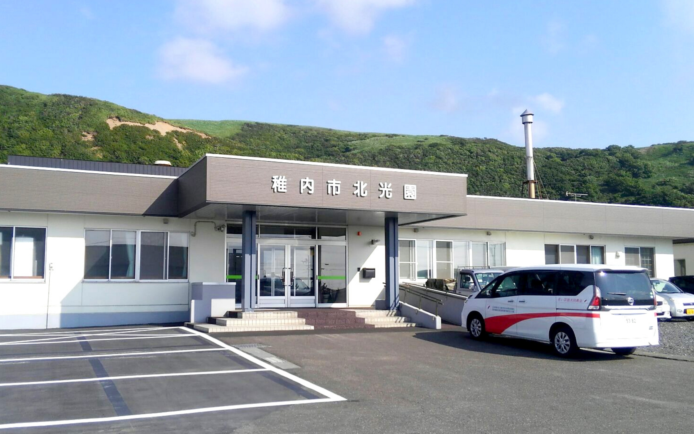
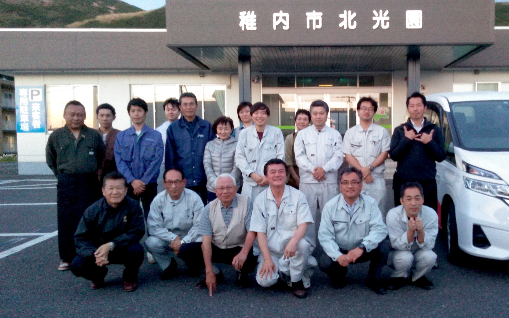
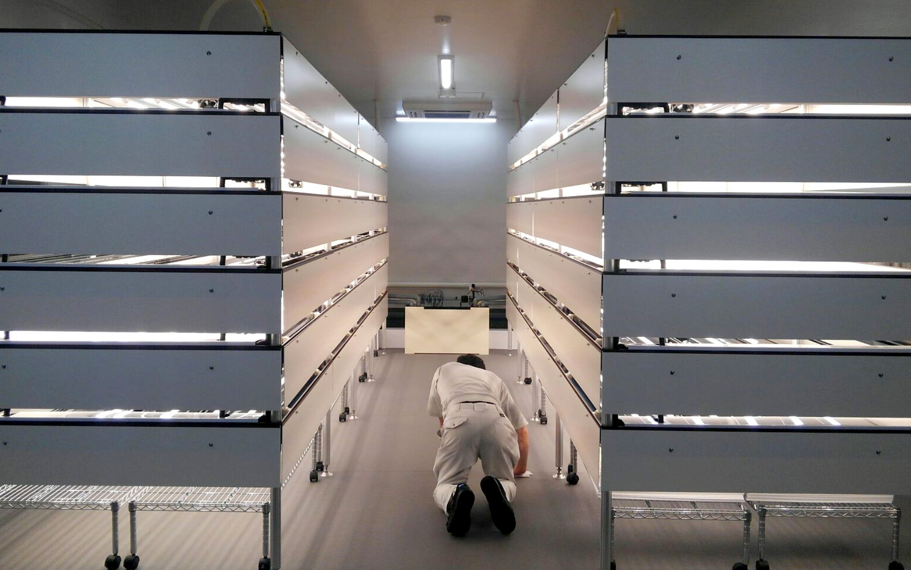

お客様からの声
導入いただいた方からのお喜びの声
-
北光園
社会福祉法人稚内市社会福祉事業団（北海道稚内市）
社会福祉法人稚内市社会福祉事業団（北海道稚内市）
http://www.wakkanai-fukusijigyodan.com/
――導入に至った経緯
-
1.どうして野菜工場を取り入れようと考えたのかお教えください
就労継続支援事業の新たな訓練活動を模索中、札幌で開催された農福連携セミナーにて建物内での完全密閉型水耕栽培を行っている社会福祉法人の取り組みを知り、まさに当法人が求めているものだと確信しました。
-
2.成電工業を何で知りましたか？
セミナーにて実践報告をいただきました社福法人を訪問した際に紹介されました。
-
3.どうして成電工業の野菜工場を導入しようと思ったのかお教えください。
園舎の空きスペースの有効活用の条件にマッチングしたこと、成電工業様のこれまでの歩み（沿革）と瀧澤社長に大きな信頼を抱きました。
- 
――導入後の評価 実際成電工業の野菜工場を導入してみていかがでしたか？
-
1.野菜の評価・卸先の評価
市内のスーパーマーケットをはじめ管内２０数店舗と 取引をさせていただいてますが、お客様からは「えぐ みが無い」、「日持ちがいい」、「捨てるところが無 くて無駄がない」、「栽培環境が安心」、「洗わず食 べれて手間いらず」など高い評価をいただき、各店舗 青果担当者様からは当園のレタスが地域に浸透し欠品 時には入荷問い合わせがあるほどの人気。
-
2.福祉的な観点の評価
播種から育苗、移植、定植、収穫、包装、出荷と利用者様の心身の状況に応じた作業分担が可能であり、自分の仕事がレタス栽培に関わっているという事実を、日々成長するレタスを見て感じる事で働く喜びを実感できていると思います。また、販売会にも売り子として参加した際に購入者からの言葉が、喜びや時に問題意識の向上になっていると思います。活躍場面づくりが容易。
-
3.成電工業の総合的な評価
工場の設計段階から関わっていただき栽培装置の設置や栽培の全工程、事業の運営に向けた全てについてご支援・ご指導をしていただき、現在も継続し助言をいただいています。成電工業様の栽培装置と出会うことが出来て良かったと思います。
-
4.導入時の印象的なエピソードなどありましたらお教えください。
利用者、職員もそうですが、隣接する同法人の施設（老人ホーム）のまかない材料として納めてもおり、皆が新鮮な当園のレタス『最北の野菜工場ひかり菜』の大ファンになり生野菜嫌いを克服した方が多く現れました。
- 
――運営について
-
1.導入前のイメージと導入後で相違がありましたか。
何と言っても施設の知名度が上がりました。そして、職員雇用、人材確保面に於いても組織としての宣伝効果として大いに貢献してくれています。市内は勿論のこと、管内の町村からも多くの視察依頼があります。
-
2.成電工業の対応はいかがでしたか
スタートの時のみならず、継続的に適宜レスポンス良くフォローアップしていただいております。
-
その他何かご意見等ありましたらご自由にお書きください。
当初、栽培したレタスが地域に受入れていただけるのか心配でしたが、寒さ厳しく露地栽培期間が半年もない稚内ですが、いつでも旬な新鮮レタスが地域の皆様に愛されるまでになりました。今後とも支援のほど宜しくお願い致します。
- 
-